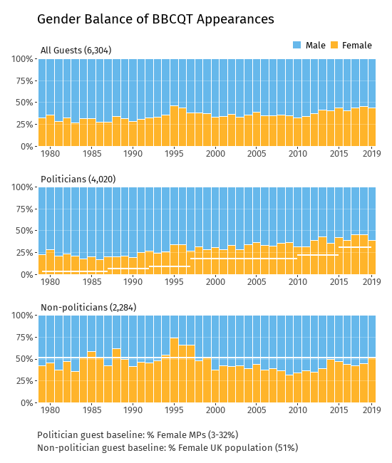
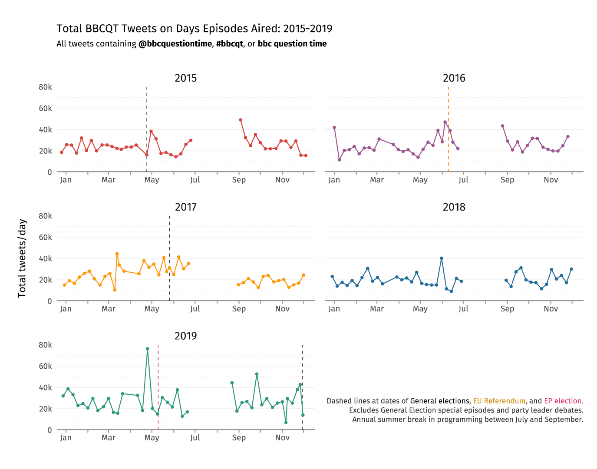
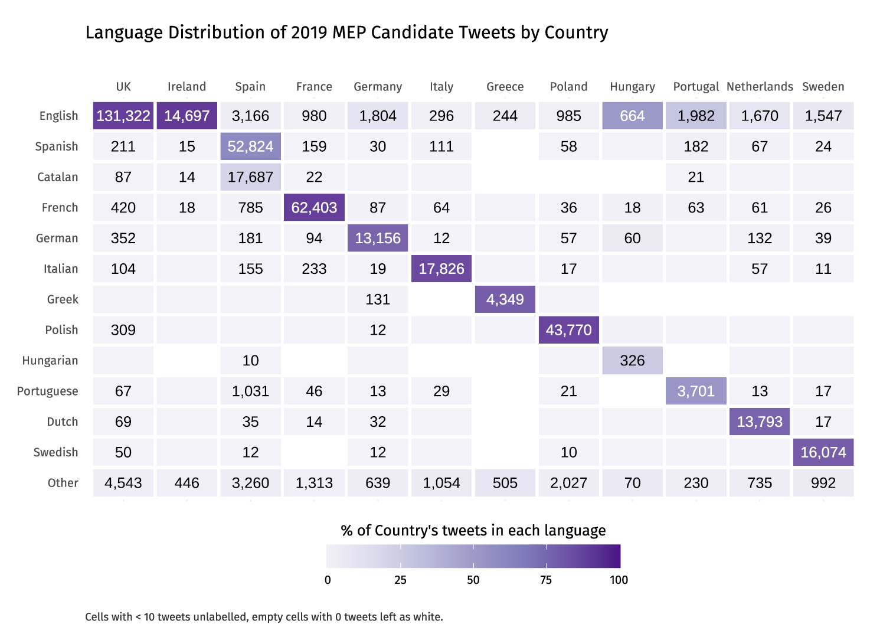
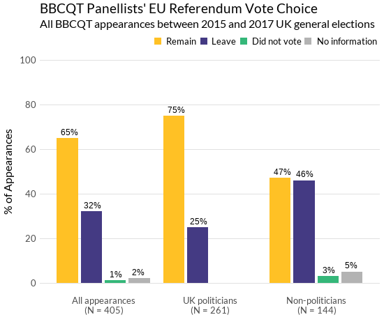
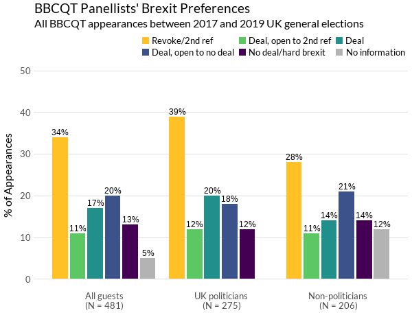

Data Visualisation

Gender Balance of BBCQT Appearances (1979-2019)

BBC Question Time Tweets on days Episodes Aired (2015-2019)

Language breakdown of 2019 MEP candidate tweets

2016 Brexit vote choice for BBCQT guest appearances (2015-19)

Brexit views for BBCQT guest appearances (2015-19)